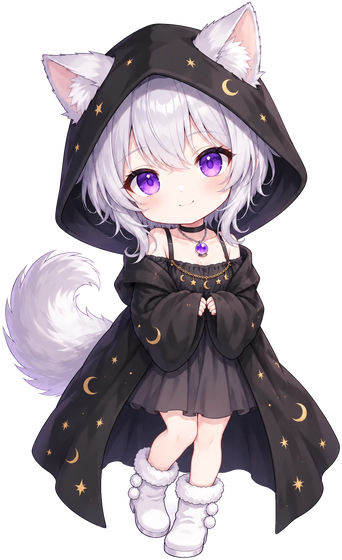
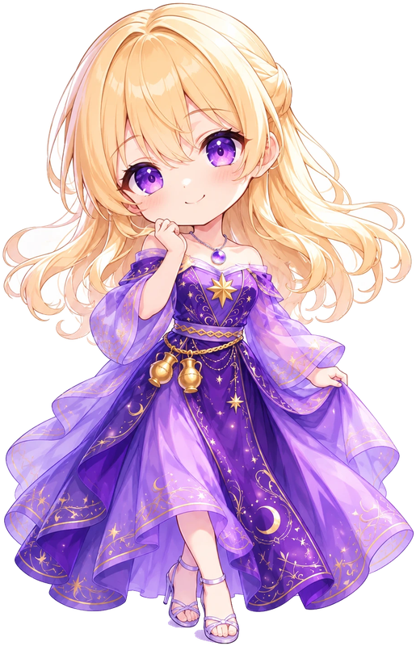

とくてん
0
30
秒
♪
－
×1
星を取ろう
同じ色で倍率UP
✦
吸い寄せ
のこり1回
← よるのあそびば
星あつめ
30秒で、どれだけ集められる？


紫
か
金
、同じ色を続けて取ると倍率アップ（最大×3）
ちがう色を取ると、その色の×1からやり直し
取り逃してもOK。倍率はそのまま続くよ
吸い寄せ
は1回だけ。3秒間、いまの色の星が集まる
星の降り方は毎回同じ。覚えて高得点を狙おう
スタート
RESULT
0
A
キャッチ
0
最大連続
0
紫 / 金
0 / 0
最高倍率
×1
もう一度遊ぶ
よるのあそびばへ戻る